6.1 Interpolação polinomial
Interpolação polinomial é um caso particular do problema geral de interpolação,
no qual a família de funções é constituída de polinômios. Para o problema ser
bem determinado é necessário restringirmos o grau dos polinômios.
Observe que para o problema ser bem determinado, é necessário restringirmos
o grau dos polinômios. Dado um conjunto de 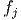 pontos a serem interpolados
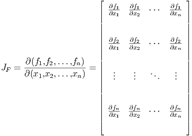, 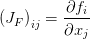 para 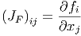, a família de polinômios 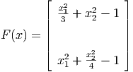 deve ser
escolhida, onde:
i.e., a família dos polinômios reais de grau menor ou igual a 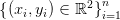.
O Exemplo 6.0.1 discute um dos casos mais simples de interpolação
polinomial, o qual consiste em interpolar uma reta por dois pontos. Neste caso, a
família de funções consiste de polinômios de grau 1. Se buscarmos interpolar uma
parábola pelos dois pontos dados, o problema fica subdeterminado, pois existem
infinitas parábolas que passam por dois pontos dados. Além disso, se
buscarmos interpolar uma reta por três pontos dados, o problema estaria
sobredeterminado e poderia não ter solução se os pontos não fossem colineares.
Veja o Exercício 6.1.3.
Assim, dado um conjunto com 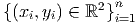 pontos 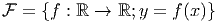, chamamos de
polinômio interpolador o polinômio de grau menor ou igual a 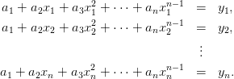 que
interpola os pontos dados.
Exemplo 6.1.1. Encontre o polinômio interpolador do conjunto de pontos
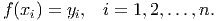, 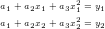, 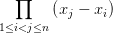, 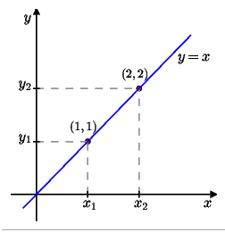
.
Solução. Como o conjunto consiste de 4 pontos, o polinômio interpolador deve
ser da forma:
As condições de interpolação são 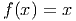, 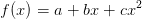, o que nos leva ao
sistema linear:
cuja solução é 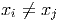, 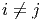, 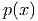 e 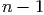. Portanto, o polinômio
interpolador é 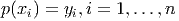. Veja Figura 6.2.
No Scilab, podemos encontrar o polinômio interpolador e esboçar seu gráfico
com os seguintes comandos:
-->xi = [0 1 2 3]’;
-->yi = [1 2 4 8]’;
-->A = [xi.^0 xi.^1 xi.^2 xi.^3];
-->a = inv(A)*yi;
-->p = poly(a,’x’,’c’)
p =
3
1 + 0.8333333x + 0.1666667x
-->xx = linspace(-0.5,3.25);
-->plot(xi,yi,’ro’,xx,horner(p,xx),’b-’);xgrid
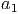
Teorema 6.1.1. Seja 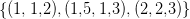 um conjunto de 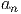 pares ordenados de
números reais tais que 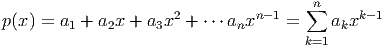 se 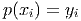, então existe um único polinômio
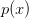 de grau ou inferior que passa por todos os pontos dados, isto
é, 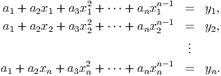.
Demonstração. Observe que o problema de encontrar os coeficientes 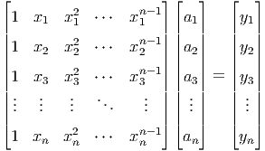,
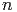,…, 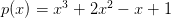 do polinômio
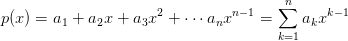 tal
que 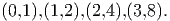 é equivalente a resolver o sistema linear com 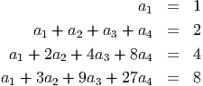 equações e 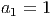
incógnitas dado por
O qual pode ser escrito na forma matricial como

A
matriz envolvida é uma
matriz de Vandermonde de ordem 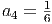 cujo
determinante é dado por
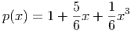 É
fácil ver que se as abscissas são diferentes dois a dois, então o determinante é não
nulo. Disto decorre que a matriz envolvida é inversível e,portanto, o sistema
possui uma solução e esta solução é única. __
Esta abordagem direta que usamos no Exemplo 6.1 e na demonstração do
Teorema 6.1.1 se mostra ineficiente quando o número de pontos é grande
e quando existe grande variação nas abscissas. Neste caso a matriz de
Vandermonde é mal condicionada (ver [6]), acarretando um aumento dos erros de
arredondamento na solução do sistema.
Uma maneira de resolver este problema é escrever o polinômio em uma base
que produza um sistema bem condicionado.
Exercícios
E 6.1.1. Encontre o polinômio interpolador para o conjunto de pontos
,  , 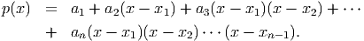, 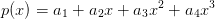. Então, faça um gráfico com os
pontos e o polinômio interpolador encontrado.
, 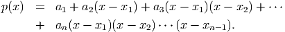, 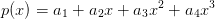. Então, faça um gráfico com os
pontos e o polinômio interpolador encontrado.
E 6.1.2. Encontre o polinômio interpolador para o conjunto de pontos
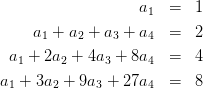, 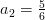, 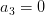, 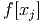.
E 6.1.3. Mostre que:
- Existem infinitas parábolas que interpolam dois pontos dados
, com .
- Não existe reta que interpola os pontos .
- Não existe parábola de equação que interpola
dois pontos dados , com . Mas, existem
infinitas parábolas de equação que interpolam
estes pontos.
Resposta.
- Uma parábola de equação que interpola os pontos deve satisfazer o sistema:
Sem perda de generalidade, para cada dado, temos:
o qual tem solução única, pois . Ou seja, para cada dado, existem tais que a parábola de
equação  interpola os pontos dados.
interpola os pontos dados.
- Certamente não existem retas de equação que interpolam os pontos dados. Consideremos então retas de equação
. Para uma tal reta interpolar os pontos dados é necessário que:
o qual é um sistema impossível.
- Não existe uma parábola de equação que interpole os pontos dados, pois tal equação determina
uma função de em . Agora, para mostrar que existem infinitas parábolas de equação que
interpolam os pontos dados, basta seguir um raciocínio análogo ao do item a), trocando por e por
.